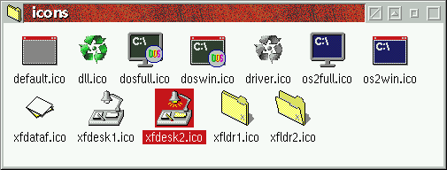

The icon replacements are turned on per default. Icon replacements can be configured as follows:
/ICONS subdirectory of the
&xwp; installation directory and rebuild the ICONS.DLL file.
This is explained below.
Now, replacing the default icons with your own favorites is fairly easy. Look into
the /ICONS subdirectory of the &xwp; installation directory, and
you will find a number of icon files:

Replace any of these files with your own favorites and execute the
ICONS.CMD script in the same directory. This will create a file
ICONS.DLL, which will be copied by &xwp; to its /BIN
subdirectory at the next Desktop restart.
Notes: The script expects the icon file names to be exactly as they are now.
Also, you cannot replace ICONS.DLL in /BIN yourself,
because once the WPS has started, that DLL is locked. So always use ICONS.CMD.
Third, ICONS.CMD requires RC.EXE to be on your PATH. This
little program is shipped with every &os2; version and should be in your \OS2
directory. If it is not, you must install it using &os2;'s "Selective Install". Make
sure that "Link object modules" is checked under the "Option System Utilities" group
("More..." button).
The icons which can be replaced are the following:
default.ico will be used for program files whose executable
type cannot be determined by &xwp;. This shouldn't happen very often.
dll.ico will be used for Dynamic Link Libraries (DLL's).
Note that not all .DLL files will be given this icon (especially not
Windows DLL files), and some files will be given this icon even though they have
a different extension. &xwp; actually reads the file header of a file to
determine whether the file is actually a DLL.
dosfull.ico and doswin.ico will be used for
DOS executables in full-screen and windowed mode, respectively.
driver.ico will be used for virtual and physical device
drivers. Not all device drivers will be given this icon however, since many of
them are assembled as DLL files, and will therefore carry the DLL icon.
os2full.ico and os2win.ico will be used for
&os2; text-mode (VIO) programs in full-screen and windowed mode, respectively.
xfdataf.ico file.
Note that this icon is only used for files which have no programs associated with them;
otherwise the program icon will be used. (That's just the default WPS behavior.)
xfdesk1.ico
and xfdesk2.ico files, for closed and open desktops, respectively.
(While the WPS uses the same icon for both closed and open desktops, you can now
use a different one for an open desktop.)
xfldr1.ico
and xfldr2.ico files, for closed and open folders, respectively.
Also, &xwp; can only change the icons as they are displayed in folders. Icons of running programs will not be affected, i.e. those in the title bar of a program window or when a program is minimized to the Desktop.
This might improve in a future &xwp; release.